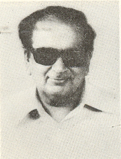
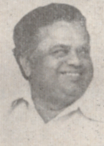
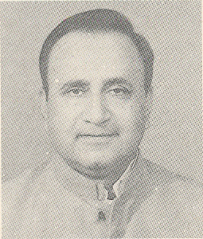
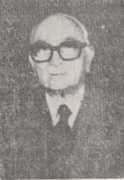
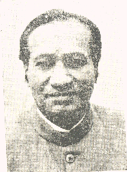

ایچ. آر. بھردواج
مکرر: ۱۹۸۵ - ۲۰۰۹

ایچ. کے. ایل. بھگت
مکرر: ۱۹۷۵ - ۱۹۸۹
ہرین پاٹھک
مکرر: ۱۹۹۹ - ۲۰۰۴

ہرش وردھن
مکرر: ۲۰۱۴ - ۲۰۲۱

ہرسمرت کور بادل
مکرر: ۲۰۱۴ - ۲۰۲۰

ہنس راج گنگارام اہیر
مکرر: ۲۰۱۴ - ۲۰۱۹

ہری بھائی پارتھی بھائی چودھری
مکرر: ۲۰۱۴ - ۲۰۱۹

ہریش راوت
مکرر: ۲۰۰۹ - ۲۰۱۴

ہمایوں کبیر
مکرر: ۱۹۵۷ - ۱۹۶۶
_(cropped).jpg)
ہردیپ سنگھ پوری
مکرر: ۲۰۱۷ - ونیہ کینس

ایچ. آر. گوکھلے
مکرر: ۱۹۷۱ - ۱۹۷۷

ہری کرشنا شاستری۔
مکرر: ۱۹۸۸ - ۱۹۸۹

ایچ. سی. داسپا
مکرر: ۱۹۶۳ - ۱۹۶۶

گورنر نارائن یادو
مکرر: ۱۹۹۰ - ۲۰۰۴

ہری کشور سنگھ
مکرر: ۱۹۹۰ - ۱۹۹۰

ہرموہن دھون
مکرر: ۱۹۹۰ - ۱۹۹۱

ایچ. ڈی. دیوے گوڑا
مکرر: ۱۹۹۶ - ۱۹۹۶

ایم. ہیرو بھائی پٹیل
مکرر: ۱۹۷۷ - ۱۹۷۹

ہیم وتی نندن بہوگنا
مکرر: ۱۹۷۱ - ۱۹۷۹

حافظ محمد ابراہیم
مکرر: ۱۹۵۸ - ۱۹۶۳

ہتیندر کنیا لال دیسائی
مکرر: ۱۹۷۶ - ۱۹۸۰

ہنری آسٹن
مکرر: ۱۹۷۹ - ۱۹۸۰

ہری ناتھ مشرا
مکرر: ۱۹۸۳ - ۱۹۸۵

ایچ. ایم. ترویدی
مکرر: ۱۹۷۴ - ۱۹۷۷

ہری ونائک پٹاسکر
مکرر: ۱۹۵۴ - ۱۹۵۷

ہنس راج کھنہ
مکرر: ۱۹۷۹ - ۱۹۷۹

ایچ. ڈی.
مکرر: ونیہ کینس - ونیہ کینس

ہرش ملہوترا
مکرر: ونیہ کینس - ونیہ کینس